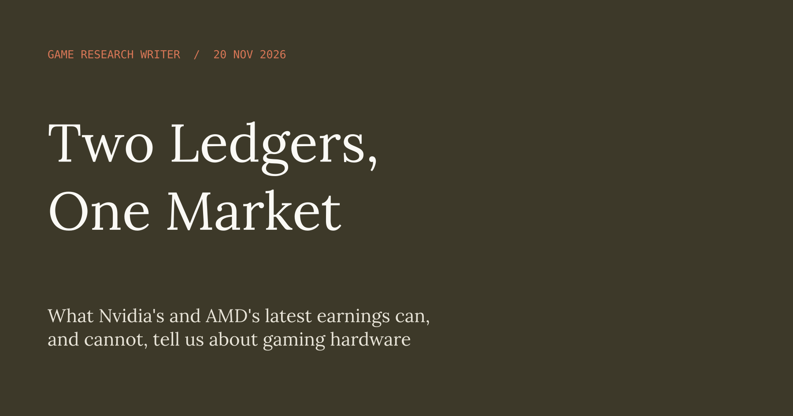
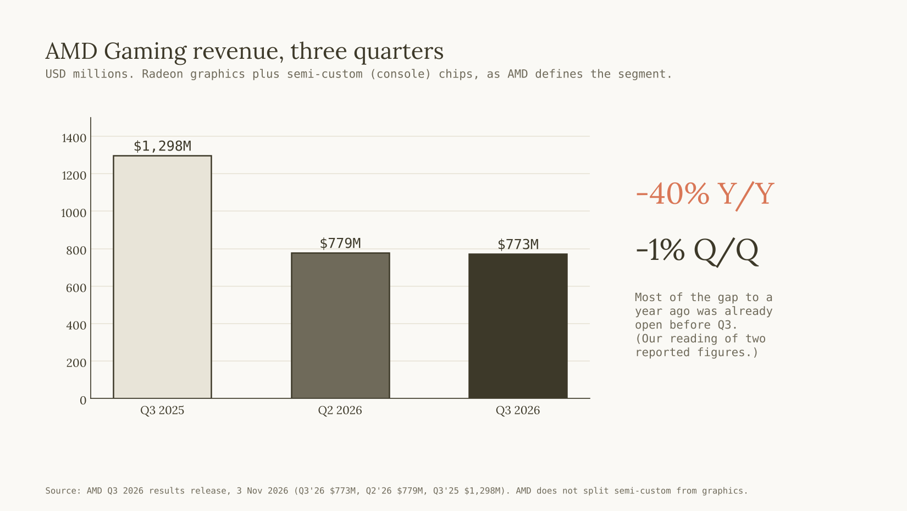
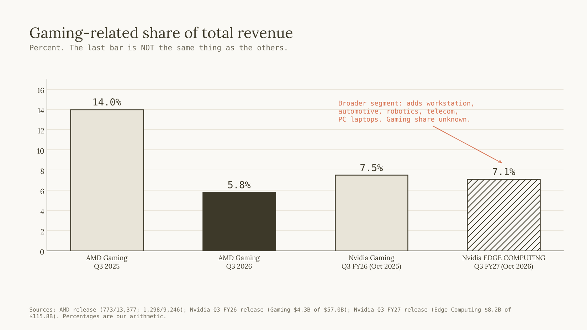
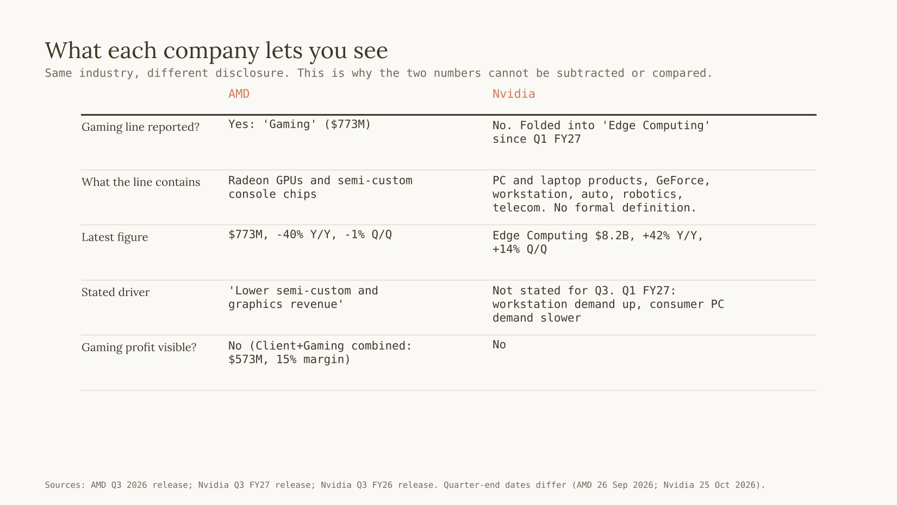
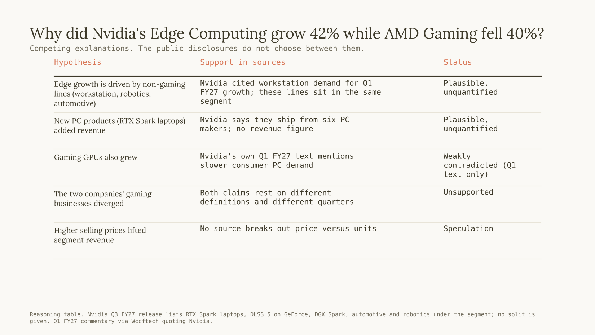
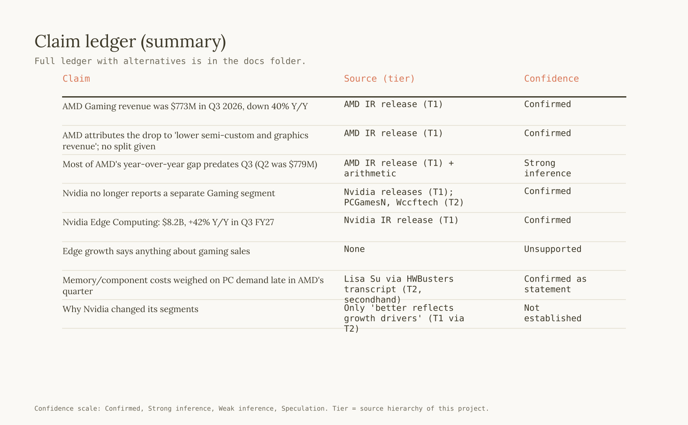

Game Research Writer · Gaming, hardware and AI · 20 November 2026
Two Ledgers, One Market
Nvidia no longer reports gaming revenue as its own line. AMD still does, and its figure fell 40% year over year. This article asks what those two disclosures can establish about the gaming-hardware business, and where they go silent.

1. Introduction
The central question is narrow: what can the latest quarterly disclosures from Nvidia and AMD establish about the state of the gaming-hardware business, and what can they not?
On 3 November, AMD reported that its Gaming segment brought in $773 million, down 40% from a year earlier. On 17 November, Nvidia reported that its Edge Computing segment brought in $8.2 billion, up 42%. Read side by side, the headlines suggest gaming hardware collapsing at one company and booming at the other. This article argues that neither reading is supported by the available evidence, and that the reason is as informative as the numbers.
2. Context
[Observation] AMD's third quarter ended 26 September 2026. Revenue was a record $13,377 million, up 45%, with Data Center at $8,546 million, up 97%. Gaming, which AMD defines as Radeon graphics plus semi-custom chips for consoles, was $773 million, and AMD's release gives the reason as lower semi-custom and graphics revenue.
[Observation] Nvidia's third quarter of fiscal 2027 ended 25 October 2026. Revenue was $115.8 billion, up 103%, of which Data Center was $107.6 billion. Beginning with its first-quarter fiscal 2027 report, Nvidia replaced its Gaming, Professional Visualization, Automotive and OEM lines with a single Edge Computing segment. The last Gaming figure it published was $4.3 billion for the quarter ended 26 October 2025, up 30% year over year.
The two quarters end about a month apart, and the segments are built differently. Both facts matter below.
3. Evidence
3.1 AMD: a large drop that mostly predates the quarter

[Observation] Gaming was $773 million in Q3 2026, $779 million in Q2 2026 and $1,298 million in Q3 2025. [Interpretation, strong inference] Because the segment was already near its current level last quarter, most of the year-over-year gap opened before Q3. The sources do not say when.
[Evidence gap] The available sources document the decline but do not establish its composition. AMD's release gives one combined reason, lower semi-custom and graphics revenue, with no split between the two. It also reports operating income only for Client and Gaming combined ($573 million, a 15% margin), so the profitability of Gaming alone is not visible.
3.2 Gaming's shrinking weight, and what the denominator is doing

[Observation, our arithmetic] AMD Gaming was about 14.0% of revenue a year ago and about 5.8% now. Two things moved at once: the numerator fell 40% while total revenue grew 45%. The share statistic therefore overstates how much of the change comes from gaming itself.
For Nvidia, the last like-for-like gaming share was about 7.5% (Q3 fiscal 2026). The Q3 fiscal 2027 figure of about 7.1% is Edge Computing, which includes more than gaming. It cannot be read as gaming's share.
3.3 Nvidia: a segment that hides the thing we want to see

[Observation] Nvidia's Q3 release reports Edge Computing at $8.2 billion, up 14% on the prior quarter and 42% on the year. It does not define the segment. It describes it through activities: RTX Spark Windows laptops, GeForce and GeForce NOW features such as DLSS 5, DGX Spark local AI systems, and automotive, robotics and telecom work. It gives no gaming or PC revenue figure.
[Observation] Nvidia described the re-segmentation as a reporting framework that better reflects its growth drivers, per coverage of its first-quarter fiscal 2027 release. [Evidence gap] The available sources document the change but do not establish the reason beyond that sentence. Commentary that Nvidia is deprioritizing gaming is an interpretation, not a finding.
3.4 What executives said about memory and demand
[Observation, secondhand] HWBusters, reproducing AMD's call, reports CEO Lisa Su saying PC sell-through slowed late in the quarter as higher memory and component costs weighed on demand, and that AMD is planning for PC unit shipments to decline by a double-digit percentage in 2027. We could not check these statements against the transcript itself. Both concern PCs, not Gaming-segment revenue specifically.
[Observation, secondhand] For Nvidia's first quarter of fiscal 2027, Wccftech quotes the company as saying Edge Computing growth was driven by workstation demand and partly offset by slower consumer PC demand, citing elevated memory and system prices. That is a statement about a different quarter. See our companion piece on the memory squeeze for the DRAM side.
4. Case studies
Case A: AMD Gaming, Q3 2026
- Verified mechanics: $773 million, down 40% Y/Y and about 1% Q/Q; segment spans Radeon and semi-custom chips; combined Client and Gaming operating margin 15%.
- Company statements: the release cites lower semi-custom and graphics revenue. One trade outlet reports that AMD ties most of the decline to console silicon late in a console generation; that paraphrase could not be verified and the release does not give the split.
- Analysis: the figure is consistent with weak console-chip and GPU sales. It is also consistent with several causes the sources do not separate.
- Limitations: one quarter; no unit or price data; no segment profit.
- Counterargument: a late-cycle console effect would predate and be independent of memory prices. TechSpot's framing, that AI buying of memory is raising prices on PCs and consoles that use AMD chips, is a reasonable hypothesis, but AMD's release does not state it as the cause.
Case B: Nvidia Edge Computing, Q3 fiscal 2027
- Verified mechanics: $8.2 billion, up 42% Y/Y and 14% Q/Q; about 7.1% of total revenue by our arithmetic; Data Center about 92.9%.
- Company statements: activities listed, no definition, no gaming figure.
- Analysis: the segment bundles businesses that can move in opposite directions. Its growth rate is not evidence about gaming.
- Limitations: the Q3 release does not give prior-period segment dollar amounts; we did not reconstruct them.
- Counterargument: if gaming GPUs were growing strongly, Nvidia might have been expected to say so. That is an expectation, not evidence.

5. Counterarguments and alternative interpretations
Strongest opposing viewpoint. Gaming hardware is in structural retreat because AI data-center demand is absorbing memory and manufacturing capacity. Supporting evidence: AMD's 40% drop, its CEO's remarks on memory costs and a double-digit PC decline in 2027, Nvidia's earlier note on slower consumer PC demand, and Nvidia's decision to stop reporting gaming.
Weaknesses in that view, and in ours. The causal link from memory costs to gaming revenue is stated about PCs, not Gaming-segment revenue, and AMD's release does not state it. Nvidia's re-segmentation has a stated rationale we cannot go beyond. In turn, our own position leans on what the press releases leave out; we did not review AMD's or Nvidia's SEC filings, which may carry more segment detail, and absence from a press release is not absence from the record.
Other readings. A console-generation lifecycle explanation, a pricing effect on revenue, and capacity being steered toward data-center products are all candidates. We found no source that tests any of them, so we do not rank them.
Unresolved questions. How much of AMD's drop is semi-custom versus graphics? What is Nvidia's gaming revenue? Did units or prices drive either company's change? Did the one-month difference in quarter ends matter?
6. Limitations
- One quarter per company; quarters end 26 September (AMD) and 25 October (Nvidia).
- Segment definitions differ and neither is a clean measure of gaming hardware.
- Executive quotes are secondhand; we did not read the transcripts directly.
- Shares and implied comparisons are our arithmetic from reported figures.
- No unit shipment, price or profit data by product line.

7. Conclusion
What we know
AMD's Gaming revenue was $773 million in Q3 2026, down 40% year over year and about 1% from the prior quarter, roughly 5.8% of AMD's revenue. Nvidia no longer reports gaming separately; its Edge Computing segment was $8.2 billion, up 42%. AMD's CEO said it is planning for a double-digit decline in PC unit shipments in 2027, per a secondhand transcript.
What we think
Most of AMD's year-over-year decline predates Q3 (strong inference). Edge Computing's growth most plausibly reflects non-gaming lines and new PC products, and should not be read as gaming growth (interpretation).
What we don't know
The split between semi-custom and graphics at AMD; Nvidia's gaming revenue; why Nvidia changed its segments; and whether memory costs caused AMD's decline.
8. Sources
- Tier 1: AMD Reports Third Quarter 2026 Financial Results (3 Nov 2026).
- Tier 1: NVIDIA Announces Financial Results for Third Quarter Fiscal 2027 (17 Nov 2026).
- Tier 1 (reproduction): Nvidia fiscal Q3 2026 results release, for the Gaming figure of $4.3 billion.
- Tier 2: PCGamesN on Nvidia's Edge Computing segment; Wccftech on Nvidia's Q1 FY27 report.
- Tier 2: HWBusters on AMD's Q3 2026 call (executive statements, secondhand); TechSpot on AMD's Q3 2026 results (causal framing is the outlet's).
- Companion: The Memory Squeeze, this site.